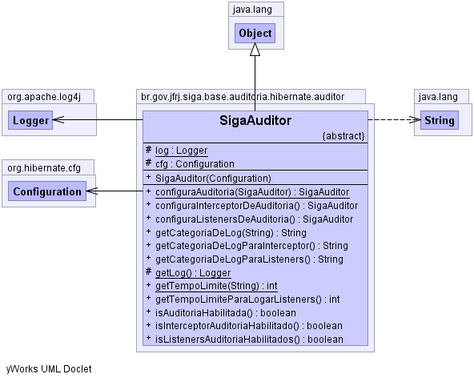

br.gov.jfrj.siga.base.auditoria.hibernate.auditor
Class SigaAuditor
java.lang.Object
 br.gov.jfrj.siga.base.auditoria.hibernate.auditor.SigaAuditor
br.gov.jfrj.siga.base.auditoria.hibernate.auditor.SigaAuditor
- Direct Known Subclasses:
- SigaHibernateChamadaAuditor
public abstract class SigaAuditor
- extends java.lang.Object
-
-

|
Field Summary |
protected org.hibernate.cfg.Configuration |
cfg
|
protected static org.apache.log4j.Logger |
log
|
|
Constructor Summary |
SigaAuditor(org.hibernate.cfg.Configuration cfg)
|
| Methods inherited from class java.lang.Object |
clone, equals, finalize, getClass, hashCode, notify, notifyAll, toString, wait, wait, wait |
log
protected static final org.apache.log4j.Logger log
cfg
protected org.hibernate.cfg.Configuration cfg
SigaAuditor
public SigaAuditor(org.hibernate.cfg.Configuration cfg)
configuraAuditoria
public static SigaAuditor configuraAuditoria(SigaAuditor auditor)
getLog
protected static org.apache.log4j.Logger getLog()
configuraListenersDeAuditoria
public abstract SigaAuditor configuraListenersDeAuditoria()
configuraInterceptorDeAuditoria
public abstract SigaAuditor configuraInterceptorDeAuditoria()
isAuditoriaHabilitada
public abstract boolean isAuditoriaHabilitada()
isListenersAuditoriaHabilitados
public abstract boolean isListenersAuditoriaHabilitados()
isInterceptorAuditoriaHabilitado
public abstract boolean isInterceptorAuditoriaHabilitado()
getTempoLimiteParaLogarListeners
public abstract int getTempoLimiteParaLogarListeners()
getTempoLimite
public static int getTempoLimite(java.lang.String tempoLimiteLogListenerPropertyName)
getCategoriaDeLogParaListeners
public abstract java.lang.String getCategoriaDeLogParaListeners()
getCategoriaDeLog
public java.lang.String getCategoriaDeLog(java.lang.String categoriaLogListenerPropertyName)
getCategoriaDeLogParaInterceptor
public abstract java.lang.String getCategoriaDeLogParaInterceptor()